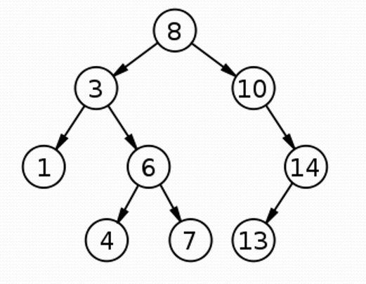
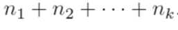

La matemática discreta es la que estudia una serie de estructuras como algoritmos, grafos y teoría de números, que son el fundamento de la ciencia de la computación.
Más que una rama de la matemática, la matemática discreta engloba a un conjunto de áreas que se dedican al medio de estructuras matemáticas "discretas" en lugar de "continuas". Esto se lleva a cabo informalmente y con el único objetivo
de comprender éste concepto.
Pensemos que en el calculo infinitesimal se trabaja sobre los números reales, mientras que la matemática discreta trabaja en base a los números naturales. También estudia las estructuras cuyos elementos pueden contarse uno por uno separadamente,
como los números enteros, los grafos y sentencias lógicas, que son aplicados en diferentes campos de la ciencia, principalmente en las ciencias de la computación.

Este principio establece que el número de posibilidades en múltiples eventos pueden ocurrir, se pueden determinar al multiplicar el número de resultados posibles por cada evento. Hay dos principios fundamentales del conteo, uno comprende la Multiplicación y el otro la Adición.
Supongamos que un evento E puede ocurrir en m formas y un segundo evento F puede ocurrir en n formas y supongamos que ambos eventos no pueden ocurrir de forma simultánea (disyuntos o mutuamente excluyentes).
Entonces E o F pueden ocurrir de m + n formas.
Si una tarea puede realizarse de n1 maneras distintas, otra de n2 maneras distintas, y así sucesivamente hasta llegar a una k-ésima tarea que puede ser realizada de nk maneras distintas, entoces la cantidad de maneras de llevar a cabo exactamente una
de ellas es:

Si se está buscando un repuesto de una motocicleta y sabemos que ese repuesto se encuentra en 3 tres tiendas del Barrio el Porvenir, 2 Barrio Chipilapa y 4 en el Barrio San Frascisco. ¿Cuántas opciones de compra tenemos?
Tiendas
3 Barrio el Porvenir
2 Barrio Chipilapa
4 Barrio San Francisco
Total = 3 + 2 + 4 = 9
Respuesta : tenemos 9 opciones de compra
¿De cuántas formas se puede cruzar un río, sabiendo que se dispone de 3 botes y 4 barcos?
3 botes
4 barcos
Total: 3 + 4 = 7
Respuesta: Se puede cruzar el río de 7 formas
Supongamos que un evento E puede ocurrir en m formas e independientemente de este evento, un evento F puede ocurrir en n formas. Entonces las convinaciones de los eventos E y F pueden ocurrir en mn formas.
En otras palabras tenemos que:
Si una tarea puede realizarse de m maneras distintas y otra puede realizarse de n maneras distintas, entonces la cantidad de maneras de llevar a cabo la primera tarea seguida de la segunda es m * n.
¿Cuántos resultados distintos se pueden obtener si se lanza un dado dos veces?
Caras del dado = 6
Cantidad de lanzamientos = 2
6 * 6 = 36
¿Cuántos resultados distintos se pueden obtener si se lanza en el siguiente orden: una moneda, un dado, un moneda?
Tenemos que:
Moneda = 2 Caras
Dado = 6 lados
Moneda = 2 caras
2 * 6 * 2 = 24
Resultado: se pueden obtener 24 resultados distintos